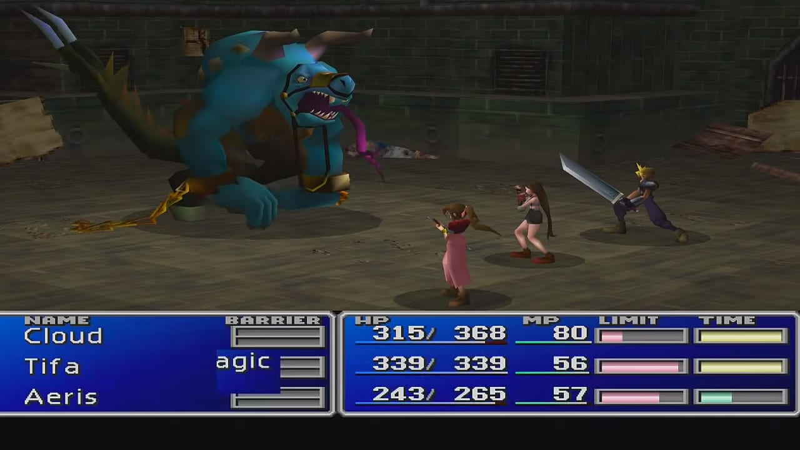
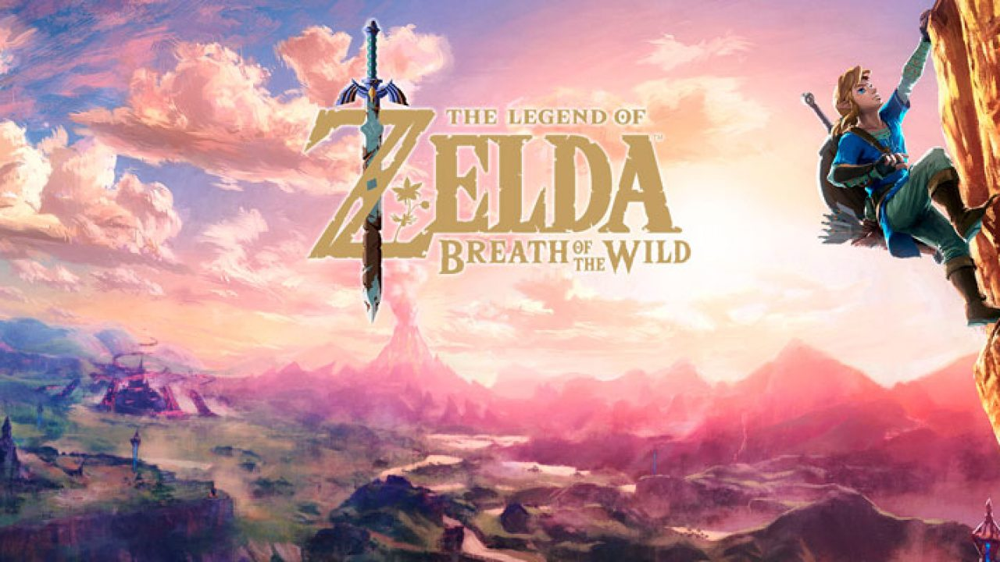
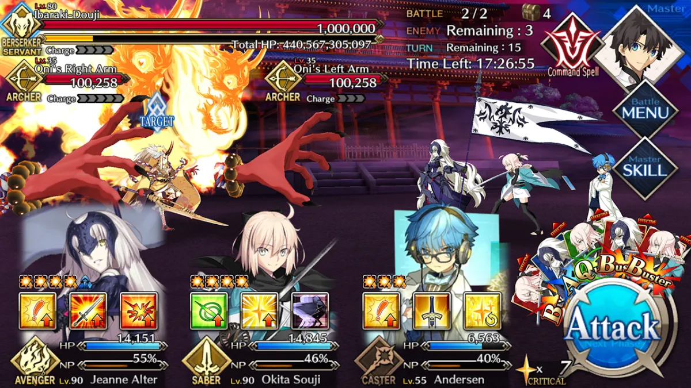

El videojuego de rol como género de videojuegos incluye una amplia variedad de sistemas y estilos de juego. Algunos elementos fuertemente asociados a los juegos de rol, como el desarrollo estadístico de personajes, han sido adaptados ampliamente a otros géneros de videojuegos. Aunque usen la palabra «rol», no pueden ser considerados como juegos de rol en sí. La proliferación de este tipo de juegos en los últimos años y el uso de la palabra «rol» para nombrarlos ha hecho que un gran número de personas crea (erróneamente) que los videojuegos de rol son realmente juegos de rol en sí mismos.
El género comenzó a mediados de los años 1970, inspirado por juegos de rol de mesa como Dungeons & Dragons, publicado en 1974 por la editorial TSR, Inc. Otras fuentes de inspiración para los primeros videojuegos de rol fueron videojuegos de deportes, videojuegos de aventura, juegos de estrategia como el ajedrez, novelas de fantasía de autores como J. R. R. Tolkien e incluso antiguas epopeyas que seguían la misma estructura básica de emprender varias misiones para lograr un objetivo final.
Tras el éxito de algunos ejemplares de este género como Dragon Quest, Final Fantasy y Megami Tensei, el género se ramificó en dos estilos, los JRPG y WRPG, juegos de rol japoneses y juegos de rol occidentales respectivamente. Además, mientras que los primeros videojuegos de rol eran para un único jugador, la popularidad de los modos multijugador se incrementó durante la década de 1990, con videojuegos de rol de acción como Secret of Mana y Diablo. Con la llegada de Internet, muchos juegos multijugador han crecido para convertirse en juegos de rol masivos en línea, por ejemplo Lineage, "World of Warcraft", Final Fantasy XI o Ragnarok Online.
Actualmente, predomina la propuesta de videojuego donde se controla y representa cabalmente a un personaje (o varios), que debe cumplir con una serie de objetivos o misiones bien establecidos por los programadores; usualmente, se crea un mundo perteneciente a un tema de fantasía épica. Para ello, se viene utilizando una interfaz gráfica cada vez más vistosa para utilizar un sofisticado inventario de poderes humanos y sobrenaturales (que el jugador desarrolla poco a poco con práctica y muchas horas de juego), recursos monetarios y objetos diversos en propiedad (comprados o encontrados de manera fortuita), para el logro de las metas.
Tras el éxito de los RPG de consola en Japón, el género comenzó a ser clasificado en dos estilos muy diferentes: RPGs de ordenador y RPGs de consola, debido al estilo, jugabilidad o razones culturales; con estos últimos habiéndose vuelto muy populares e influenciados por el estilo de videojuegos japonés. A pesar de esto, a principios del siglo XXI, cuando las diferencias entre plataformas se hicieron difusas, los RPG de ordenador y de consola acabaron siendo clasificados como videojuegos de rol occidentales (WRPG) y videojuegos de rol orientales (JRPG) respectivamente.
A pesar de compartir características fundamentales, las diferencias entre estas dos corrientes eran grandes. Los WRPG tienden a tener gráficos más oscuros, personajes más viejos y están más centrados en la libertad del jugador, el realismo y las mecánicas del juego. En contraste, los JRPG suele tener gráficos más brillantes y similares al anime, personajes más jóvenes y están más centrados en historias más lineales con tramas más intrincadas. De hecho, es común que los WRPG permitan al jugador crear su propio personaje desde la nada y tengan un sistema de árbol de diálogos que permite al jugador tomar sus propias decisiones.7 Por otra parte, los JRPG limitan a los jugadores a desarrollar personajes predefinidos y no suelen dar la opción de crear uno propio o hacer decisiones respecto a la trama
Unos de los principales atractivos que persiguen los aficionados a esta clase de videojuego, se aprecian precisamente en la jugabilidad del combate de tipo medieval cada vez más complejo y realista en ciertos aspectos, como en los movimientos y rasgos humanos más naturales en general, los bienes virtuales que se poseen (en especial armas y efectos de guerra encantados o mágicos, que facilitan el juego notablemente, o que simplemente, se presumen), el detalle en las estadísticas que arroja la aventura y los reconocimientos al tiempo invertido en el videojuego (niveles de las habilidades alcanzados, que define la respetabilidad del jugador ante los otros aficionados).
La duración de un solo juego de estos demanda mucho tiempo; puede variar mucho para su terminación o fin por parte del usuario promedio. Si se juega a un ritmo sano y detallista, no es raro observar un periodo de varios meses e inclusive más de un año (dependerá de la veneración que le dedique cada jugador a determinado videojuego y si lo abandona por periodos). El juego puede mezclarse con otro género como rol y aventura.
A diferencia de los juegos de acción, los combates de un RPG son un desafío táctico, y los videojuegos de rol conllevan decisiones no relacionadas directamente con la acción, por ejemplo, la gestión de un inventario, la elección de opciones de diálogo y la compraventa de objetos.
A pesar de que los RPG comparten algunas reglas de combate con los juegos de guerra, en los juegos de rol se controla un pequeño grupo de personajes. En los juegos de guerra se tiende a tener grandes grupos de unidades idénticas, junto a unidades no humanoides como tanques y helicópteros. Los juegos de rol no suelen permitir al jugador producir más unidades que las predeterminadas, a pesar de que existen ejemplos que han combinado características de ambos, como la saga Heroes of Might and Magic que combina héroes individuales (similares a los de los RPG) con grandes cantidades de tropas en batallas a gran escala (al estilo de los juegos de guerra).
Los RPG rivalizan con los juegos de aventura en términos de tramas ricas, en contraste a géneros que no dependen de su trama, como los juegos de deportes o los juegos de puzles. A pesar de ello, los juegos de aventuras suelen tener personajes bien definidos, mientras que los RPG pueden dar la opción de que el jugador diseñe su propio personaje. Los juegos de aventura suelen centrarse en un único personaje, mientras que en los juegos de rol la trama gira alrededor de un grupo de personajes. Además, los RPG suelen tener un sistema de combate, cosa de la que suelen carecer los juegos de aventuras. Mientras que ambos géneros pueden centrarse en el desarrollo personal o psicológico de un personaje, los RPG suelen hacer énfasis en un complejo sistema de economía donde los personajes son definidos por unos atributos numéricos.
Los elementos de jugabilidad asociados con este género, como el desarrollo de personajes estadístico, han sido adaptados a otros géneros. Por ejemplo, Grand Theft Auto: San Andreas, un videojuego de acción-aventuras, usa recursos estadísticos para definir un amplio rango de atributos como el aguante, el atractivo la habilidad con armas, conducción, capacidad pulmonar y tono muscular; y usa numerosas escenas y misiones para avanzar en la historia. Warcraft III: Reign of Chaos un juego de estrategia en tiempo real, contiene héroes que pueden completar misiones, obtener nuevo equipamiento y aprender nuevas habilidades a medida que avanzan de nivel, características propias de un RPG